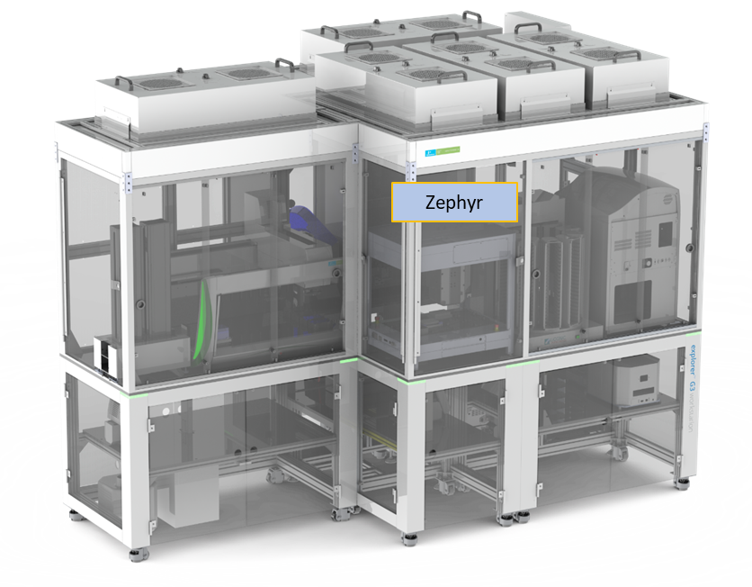
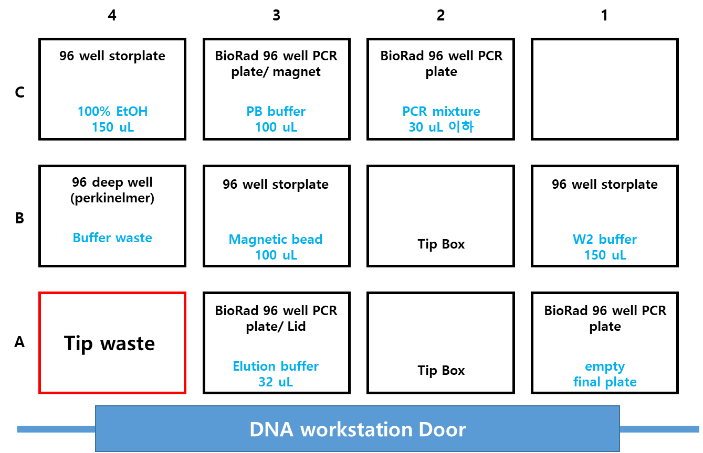
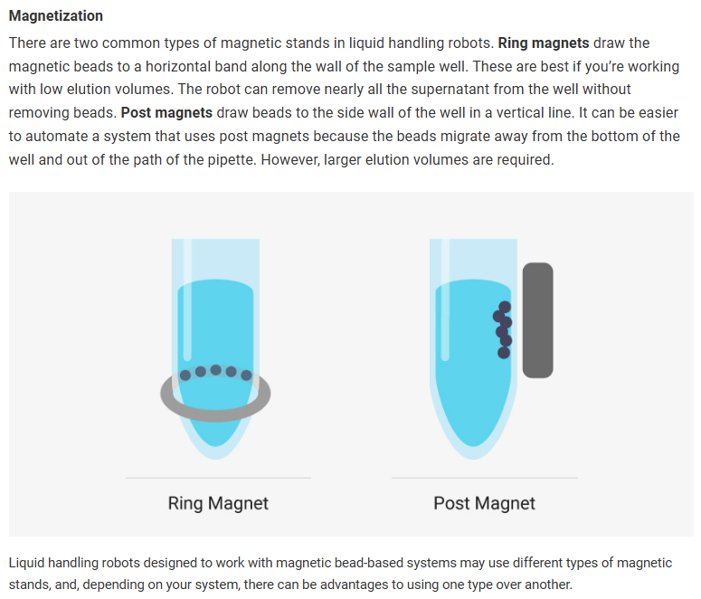

4 96 channel Liquid handler
4.1
4.2 장비소개
Automated NGS Library preparation system
96-channel pipettes: 1-200 uL
1-5 uL volume: <5% CV
5-200 uL: <2% CV
4-70 ℃ thermal heater and shaker
Magnetic plate for DNA purification with magnetic bead
96 well plate/384 well plate
4.3 장비위치

4.4 메뉴얼 파일 위치
share:\19_Equipment_장비_user’s_guide
4.5 사용법
4.6 Application (unit process)
4.6.1 NGS sample preparation
4.6.1.1 시약
- Nanopore sequencing Kit
4.6.1.2 준비물
- 시작물질: barcodePCR 반응액
4.6.1.3 프로토콜
- Nanopore pooling
4.6.2 PCR fragment purification
4.6.2.1 시약
- MagListo 5M PCR purification Kit (Bioneer)
4.6.2.2 준비물
시작물질: 96 well PCR plate에 담긴 PCR 반응액
96-well storplate - 3 ea
96-well PCR plate - 3 ea
Lid cover - 1 ea
96-deep well 2 ml - 1 ea (re-use)
Zephyr 200 ul Filter tip - 2 rack
4.6.2.3 실험비용
- 키트 + 세팅비 = 96 rxn 기준, 151,087 원
| 1 rxn | 96 rxn | cost | |
|---|---|---|---|
| MagListo™ PCR/Gel Purification Kit | 1 ea | 1 ea | 72,600 |
| Hard-Shell PCR plate-96, full skirt | 3 ea | 3 ea | 6,248 |
| StorPlate-96 V, 450 μL/well, 96-well /50 | 3 ea | 3 ea | 8,646 |
| Zephyr 200 | 2 ea | 192 ea | 40,700 |
| 128,194 |
| 사용개수 | 단가 | 비용 | |
| 25ml Disposable Reservoirs, Sterile | 3 | 972 | 2,917 |
| 100ml Disposable Reservoirs, Sterile | 2 | 972 | 1,945 |
| 1250 ul, INTEGRA | 40 | 54.78 | 2,191 |
| 22,893 |
4.6.2.4 Labware Location

4.6.2.5 프로토콜
- Purification1: running time 46 min ± 2 min
4.6.3 E. coli Transformation
4.6.3.1 시약
4.6.3.2 준비물
4.6.3.3 프로토콜
4.6.4 Plasmid Extraction
4.6.4.1 시약
- Wizard MagneSil Plasmid Purifiaction System (Promega)
4.6.4.2 준비물
Deep well plate 용 shaker 추가 설치 필요
- 2024-06월 현재 Zephyr에 설치된 shaker는 2mm orbital, 96-well PCR plate용으로 deep well plate 을 사용하게 되면 제대로 docking 되지 않아 rpm을 낮게 설정해야함. 낮은 rpm 값은 bead binding 과 washing, elution에 영향을 미쳐 효율이 좋지 않을 수 있음.
96 well magnetic rod 추가 구매 필요
- Zephyr에 설치된 magnetic plate는 ’Ring magnet’으로 liquid handler 이용 시 bead loss 가 발생할 수 있어 ’4 point post Magnet’을 권장함
- 
4.6.4.3 프로토콜
4.6.5 Protein purification
4.6.5.1 시약
- Affinity magnetic bead
4.6.5.2 준비물
- 시작물질: cell lysate - tagged protein